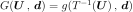
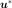
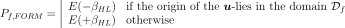
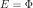
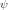

FORM¶
 is the input random vector and
is the input random vector and  its joint density probability function.
its joint density probability function. a deterministic vector,
a deterministic vector,
 the limit state function of the
model,
the limit state function of the
model,
 the event considered here and g(,) = 0 its boundary.
the event considered here and g(,) = 0 its boundary. :
:(1)¶

The method proceeds in three steps:
- Map the probabilistic model in terms of thanks to
an isoprobabilistic transformation
 which is a
diffeomorphism from
which is a
diffeomorphism from  into
into  ,
such that the distribution of the random vector
,
such that the distribution of the random vector
 has the following properties :
has the following properties :
 and
and  have the same
distribution for all rotations
have the same
distribution for all rotations  .The usual isoprobabilistic transformations are the Generalized Nataf transformation and the Rosenblatt one.The mapping of the limit state function is
.The usual isoprobabilistic transformations are the Generalized Nataf transformation and the Rosenblatt one.The mapping of the limit state function is
. Then, the event probability rewrites :
rewrites :(2)¶

where
 is the density function of the
distribution in the standard space : that distribution is spherical
(invariant by rotation by definition). That property implies that
is a function of
is the density function of the
distribution in the standard space : that distribution is spherical
(invariant by rotation by definition). That property implies that
is a function of  only.
Furthermore, we suppose that outside the sphere which tangents the
limit state surface in the standard space, is
decreasing.
only.
Furthermore, we suppose that outside the sphere which tangents the
limit state surface in the standard space, is
decreasing. - Find the design point

which is the point verifying the event of maximum likelihood : the decreasing hypothesis of the standard distribution outside the sphere which
tangents the limit state surface in the standard space implies that
the design point is the point on the limit state boundary the nearest
to the origin of the standard space. Thus, is the
result of a constrained optimization problem. - In the standard space, approximate the limit state surface in the standard space by a linear surface at the design point . Then, the probability ((2)) where
the limit state surface has been approximated by a linear surface
(hyperplane) can be obtained exactly, thanks to the rotation
invariance of the standard distribution :
(3)¶

where is the Hasofer-Lind reliability index,
defined as the distance of the design point
to the origin of the standard space and
is the Hasofer-Lind reliability index,
defined as the distance of the design point
to the origin of the standard space and
 the marginal cumulative density function of the spherical
distributions in the standard space.Let us recall here that in the Rosenblatt standard space, random vectors follow the standard normal distribution (with zero mean, unit variance and unit correlation matrix), which implies that
the marginal cumulative density function of the spherical
distributions in the standard space.Let us recall here that in the Rosenblatt standard space, random vectors follow the standard normal distribution (with zero mean, unit variance and unit correlation matrix), which implies that
. In the Generalized Nataf standard space, random vectors follow some spherical distributions, with zero mean, unit variance, unit correlation matrix and which type
is the one of the copula of the physical random vector : in that case, is the 1D cumulative
distribution function with zero mean, unit variance and which type
is .
Here, the event considered is explicited directly from the limit state
function : this is the classical
structural reliability formulation.
However, if the event is a threshold exceedance, it is useful to
explicit the variable of interest
 , evaluated from the model
, evaluated from the model
 . In that case, the event considered, associated to
the threshold
. In that case, the event considered, associated to
the threshold  has the formulation:
has the formulation:
 and the limit state function is :
and the limit state function is :
 .
is the threshold exceedance probability, defined as :
.
is the threshold exceedance probability, defined as :
 .
.
API:
See
FORM
Examples:
References:
Ditlevsen and H.O. Madsen, 2004, “Structural reliability methods”, Department of mechanical engineering technical university of Denmark - Maritime engineering, internet publication.
Madsen, Krenk, S., Lind, N. C., 1986, “Methods of Structural Safety”, Prentice Hall.